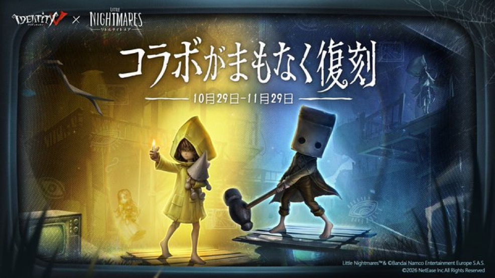

2026.10.29現在

Identity V×リトルナイトメアコラボが復刻！
【シックスとモノの荘園探索】イベントが復刻！指定タスクを完了すると【アイコン】シックス・モノを獲得でき、全タスク完了でコラボ【SSR衣装】泣き虫-モノを直接受け取れます！
「少女」コラボパックも20%オフの1968エコーで再登場！【SSR衣装】「少女」-シックスは1388エコー、【SSR携帯品】「少女」-リモコンは1068エコーで購入可能！（エコーのみ）
イベント期間：2026年10月29日メンテナンス後〜2026年11月29日23時59分
コラボ情報の詳細はこちらへむへむの一言
復刻イベントが来た！少女の衣装は絶対入手しておきたい。取り逃した人はぜひ購入しよう！
「手記の加筆」ハロウィンイベント『月宴の巡り』開催！
イベントタスクを完了すると孤光・スコープ・手掛かり・欠片などを獲得できます！【災いの女】マップにハロウィン限定【UR詞章】カボチャ閣下、【SSR詞章】新月カボチャタルトが登場！
カボチャ閣下を獲得すると、カボチャの被り物をした異象から攻撃されなくなります！
ハンターモードにオペラ歌手・「フールズ・ゴールド」・時空の影・「足萎えの羊」・「フラバルー」・雑貨商・「ビリヤードプレイヤー」・「女王蜂」・「歯医者」・「心の獣」の10人が追加されました！
イベント期間：2026年10月29日〜2026年11月18日
手記の加筆の詳細はこちらへむへむの一言
手記モードでオペラ使いたかったから今回のアプデ個人的には嬉しい！
対戦の細かな調整が実施！
ハンターに気絶やノックバックなどのコントロール効果を与えたサバイバーが、対応する即時定型文を送信できるようになりました。
「神童」の泥団子がサバイバーに命中した後のスライド判定が追加されました。
キャラクター詳細はこちら
みんなのコメント